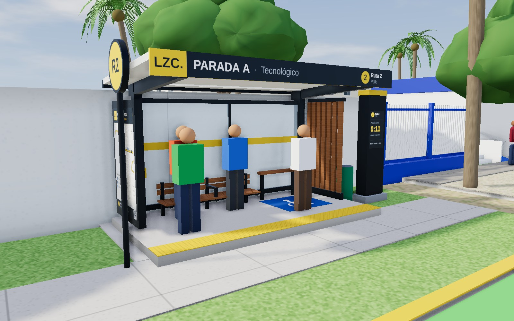
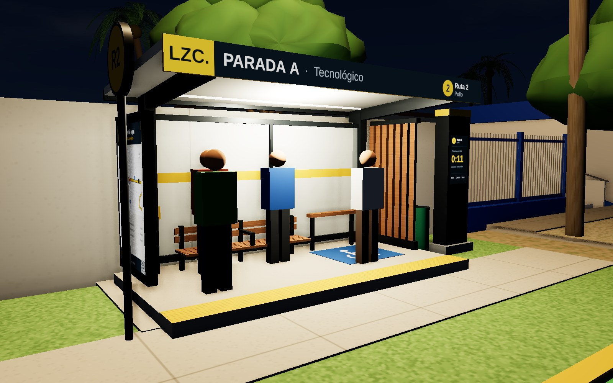
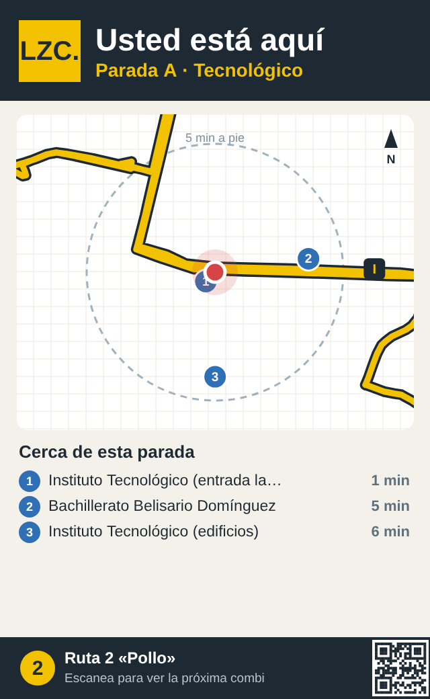
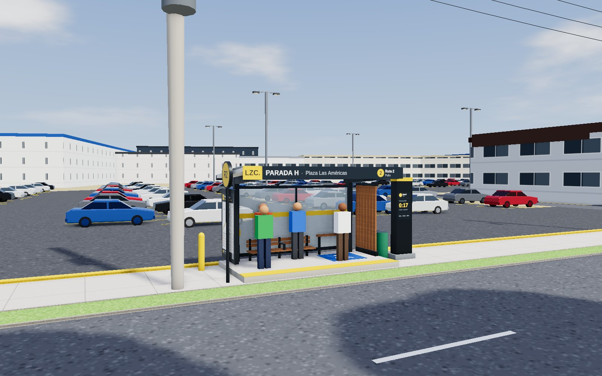

Plataforma de transporte en combi · Lázaro Cárdenas, Michoacán
Ficha técnica
La Caseta LZC: sombra, energía solar, contador de llegada y mapa de los lugares cercanos para las paradas de combi de la ciudad. Esta ficha documenta la caseta y su presupuesto, y la red de nueve paradas de la ruta piloto, la Ruta 2 «Pollo».

| Proyecto | Rutas LZC · plataforma de transporte en combi |
|---|---|
| Ruta piloto | Ruta 2 «Pollo» |
| Elaboró | {Nombre del equipo} · 5 integrantes |
| Fecha | Octubre de 2026 |
| Fase | 1 de 3 · Ruta piloto |
| Paradas | 9 casetas, de la A a la I |
| Costo por caseta | — |
Contenido
Caseta
Caseta LZC
Modular, solar y con información para el pasajero. Un mismo diseño para las paradas de todas las rutas.
Especificaciones
| Plataforma | Concreto f'c 250, 4.80 × 2.40 m, a nivel de banqueta |
|---|---|
| Estructura | 2 columnas PTR 4"×4" cal. 11 con viguetas en voladizo; acabado grafito |
| Cubierta | 4.90 × 2.40 m, cae 16 cm hacia atrás; canalón y bajante |
| Altura libre | 2.80 m al frente, 2.62 m atrás |
| Respaldo | Cristal templado 10 mm con franja de color anticolisión |
| Mobiliario | Banca de madera de 2.10 m con descansabrazos; apoyo isquiático |
| Sombra lateral | Celosía de 7 lamas de madera (sol de la tarde) |
| Accesibilidad | Franja táctil; espacio de 1.20 × 1.07 m para silla de ruedas |
Información y energía
| Letrero | Nombre de la parada, retroiluminado |
|---|---|
| Tótem | Pantalla LED P10 a dos caras: minutos para la próxima combi |
| Mapa | «Usted está aquí» con lugares a pie y código QR |
| Señal | Disco «R2» en poste de 3.05 m |
| Paneles | 2 × 550 W monocristalinos sobre la cubierta |
| Batería | LiFePO4 2 × 12.8 V 100 Ah (2.56 kWh) |
| Iluminación | Tira LED con sensor crepuscular |
| Extras | Carga USB y botes de basura separada |
Caseta
Alzado y detalles



Cómo funciona el tótem
- Un ESP32 con módem 4G recibe la hora de llegada de la próxima combi
- La pantalla LED muestra la cuenta regresiva y «En parada» al llegar
- Mientras no haya GPS en las combis, usa el horario de la ruta
- El QR del mapa abre la misma información en el celular
Archivos del modelo
- modelos/caseta-lzc.glb · para Blender, three.js o visores 3D
- Modelo editable de SketchUp (.skp) del equipo
- herramientas/ · conversión de SketchUp a la página
Presupuesto
Presupuesto de una caseta
Precios de referencia en pesos, IVA incluido, . Módulos 01 a 06: la estructura y la energía. † = estimado, por cotizar en Lázaro Cárdenas.
| Concepto | Cant. | Unidad | P. unitario | Importe |
|---|
Presupuesto
Información, opcionales y total
Módulos 07 a 12: lo que informa al pasajero y los opcionales (opc.), que se eligen según el lugar.
| Concepto | Cant. | Unidad | P. unitario | Importe |
|---|
Costo de una caseta
Costo de la red
† Estimado: cotizar con proveedores de Lázaro Cárdenas. Los demás precios salen de tiendas en línea (fuentes en la hoja siguiente).
Presupuesto
Energía, operación y fuentes
Balance de energía (por día)
| Equipo | W | h | Wh |
|---|
Operación anual por caseta
Fuentes de precios
Referencia: en 2023 Querétaro destinó unos 98 millones de pesos a siete paradas del Paseo 5 de Febrero (cerca de 14 millones cada una), con obra vial incluida. La Caseta LZC es una estructura ligera que se instala sobre la banqueta existente.
Paradas
Red de nueve paradas
Ubicadas donde hay más destinos a cinco minutos a pie: salud, escuelas, compras, trámites y transporte.
| Parada | Calle | Km | Lugares a pie |
|---|
Lugares tomados de OpenStreetMap; minutos a pie estimados a 75 m/min con 30 % de rodeo. Las nueve tienen maqueta 3D: A y H (✓) con visita en sitio; las demás con Google Street View y OpenStreetMap, por visitar.
Recorrido
Recorrido de la Ruta 2
Parámetros de operación
| Longitud de la vuelta | |
|---|---|
| Duración de la vuelta | |
| Velocidad promedio | |
| Frecuencia | |
| Unidades necesarias | |
| Paradas propuestas | |
| Base |
Tramos
| De → a | Distancia | Tiempo |
|---|
Calles en orden
Recorrido real dibujado por el equipo en Google Earth. Frecuencia y velocidad: supuestos de la simulación.
Base
Base de la Ruta 2 ·

Datos de la base
Ubicación en el recorrido
Operación
- Las unidades esperan su turno estacionadas frente a la base
- Primera salida a las 6:00 y última a las 22:00
- Salen por Calle Tamarindo hacia el Libramiento a Sicartsa
Datos de la parada
Elementos de la parada
- Caseta LZC sobre plataforma con franja táctil
- Tótem contador de llegada a dos caras
- Mapa «Usted está aquí» con lugares a pie
- Disco de parada «R2» en poste independiente
- Código QR a la pantalla de parada en vivo
Ubicación en el recorrido
Entorno
Observaciones:
Metodología
Metodología y fuentes
- 01LevantamientoRevisión de cada esquina en Google Street View y en imagen satelital: fachadas, banquetas, camellones, mobiliario y vegetación.
- 02Trazo del recorridoRecorrido real de la Ruta 2 dibujado por el equipo en Google Earth; calles y edificios de OpenStreetMap.
- 03Modelado 3DMaqueta a escala de la base y de cada parada con Three.js: calles, casas, comercios, vegetación, caseta, contador, combis, peatones y tránsito.
- 04Análisis de usoDía de servicio simulado (una combi cada 15 min), posición del sol, iluminación nocturna y cobertura a pie de cinco minutos (400 m).
Fuentes y herramientas
| Cartografía | © colaboradores de OpenStreetMap; estilo de OpenFreeMap |
|---|---|
| Recorrido | Google Earth (trazo del equipo, archivo KML) |
| Referencia visual | Google Street View |
| Mapa interactivo | MapLibre GL |
| Modelado 3D | Caseta en SketchUp; maquetas en Three.js |
| Lugares cercanos | OpenStreetMap (Overpass) |
Pendientes
- Visitar las paradas B a G e I para afinar su maqueta
- Cotizar la caseta con proveedores de Lázaro Cárdenas
- Horario real y número de unidades
- Sumar las siguientes rutas y más paradas
Elaboró
{Nombre}
Revisó
{Nombre}
Vo. Bo.
{Nombre}